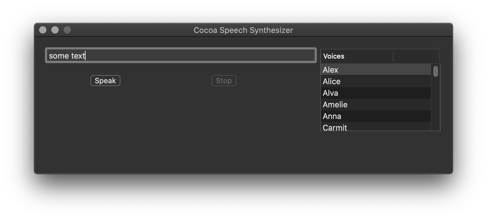

Cocoa - Speech Syntesizer
This post is part of Cocoa UI examples series. It covers the implementation of application that uses speech synthesizer (NSSpeechSynthesizer) and cell based table view (NSTableView). Example is built on macOS Catalina and Xcode 11.3. GitHub | Repository name
Add controls
In the Interface Builder text field, two buttons and a table view
have to be added to MainMenu.xib window.
It should look like this in the end.

Speech synthesizer
An instance variable name speechSynthesizer of type NSSpeechSynthesizer is
added to AppDelegate class and instantiated in init function.
Functions speak and stop handle the work of speech synthesizer.
In order to enable speak button when speech synthesizer stops, one of the three messages
that speech synthesizer sends to its delegate must be implemented. That is speechSynthesizer:didFinishSpeaking
// Sent when an NSSpeechSynthesizer object finishes speaking through the sound output device.
- (void)speechSynthesizer:(NSSpeechSynthesizer *)sender
didFinishSpeaking:(BOOL)finishedSpeaking
{
[_speakButton setEnabled:YES];
[_stopButton setEnabled:NO];
[_tableView setEnabled:YES];
}
Table view
Table view displays columns of data.
It is of type NSTableView and has a helper object dataSource.
The data source must conform to the NSTableDataSource protocol, meaning
that delegate must have these two methods:
//Returns the number of records managed for aTableView by the data source object.
- (NSInteger)numberOfRowsInTableView:(NSTableView *)tableView
{
return (NSInteger)[voices count];
}
//Called by the table view to return the data object associated
//with the specified row and column.
- (id)tableView:(NSTableView *)tableView
objectValueForTableColumn:(NSTableColumn *)tableColumn
row:(NSInteger)row
{
NSString *voice = [voices objectAtIndex:row];
NSDictionary *voicesDictionary = [NSSpeechSynthesizer attributesForVoice:voice];
return [voicesDictionary objectForKey:NSVoiceName];
}
In order to change the voice of speech synthesizer, based on selection in tableView,
method tableViewSelectionDidChange must be implemented.
//Tells the delegate that the table view’s selection has changed.
- (void)tableViewSelectionDidChange:(NSNotification *)notification;
{
NSInteger row = [_tableView selectedRow];
if (row == -1)
{
return;
}
NSString *selectedVoice = [voices objectAtIndex:row];
[speechSynthesizer setVoice:selectedVoice];
}
AppDelegate class complete implementation
#import
#import "AppDelegate.h"
@implementation AppDelegate
//---------Events---------
- (id)init
{
self = [super init];
if (self)
{
speechSynthesizer = [[NSSpeechSynthesizer alloc] initWithVoice:nil];
[speechSynthesizer setDelegate:self];
voices = [NSSpeechSynthesizer availableVoices];
}
return self;
}
//Prepares the receiver for service after it has been loaded from an
//Interface Builder archive, or nib file.
- (void) awakeFromNib
{
NSString *defaultVoice = [NSSpeechSynthesizer defaultVoice];
NSInteger defaultRow = [voices indexOfObject: defaultVoice];
NSIndexSet *indices = [NSIndexSet indexSetWithIndex:defaultRow];
[_tableView selectRowIndexes:indices byExtendingSelection:NO];
[_tableView scrollRowToVisible:defaultRow];
}
// Sent when an NSSpeechSynthesizer object finishes speaking through the sound output device.
- (void)speechSynthesizer:(NSSpeechSynthesizer *)sender
didFinishSpeaking:(BOOL)finishedSpeaking
{
[_speakButton setEnabled:YES];
[_stopButton setEnabled:NO];
[_tableView setEnabled:YES];
}
//Returns the number of records managed for aTableView by the data source object.
- (NSInteger)numberOfRowsInTableView:(NSTableView *)tableView
{
return (NSInteger)[voices count];
}
//Called by the table view to return the data object associated
//with the specified row and column.
- (id)tableView:(NSTableView *)tableView
objectValueForTableColumn:(NSTableColumn *)tableColumn
row:(NSInteger)row
{
NSString *voice = [voices objectAtIndex:row];
NSDictionary *voicesDictionary = [NSSpeechSynthesizer attributesForVoice:voice];
return [voicesDictionary objectForKey:NSVoiceName];
}
//Tells the delegate that the table view’s selection has changed.
- (void)tableViewSelectionDidChange:(NSNotification *)notification;
{
NSInteger row = [_tableView selectedRow];
if (row == -1)
{
return;
}
NSString *selectedVoice = [voices objectAtIndex:row];
[speechSynthesizer setVoice:selectedVoice];
}
//---------Functions---------
- (IBAction)stop:(id)sender
{
[speechSynthesizer stopSpeaking];
}
- (IBAction)speak:(id)sender
{
NSString *str = [_textField stringValue];
if ([str length] == 0)
{
return;
}
[speechSynthesizer startSpeakingString:str];
[_speakButton setEnabled:NO];
[_stopButton setEnabled:YES];
[_tableView setEnabled:NO];
}
@end